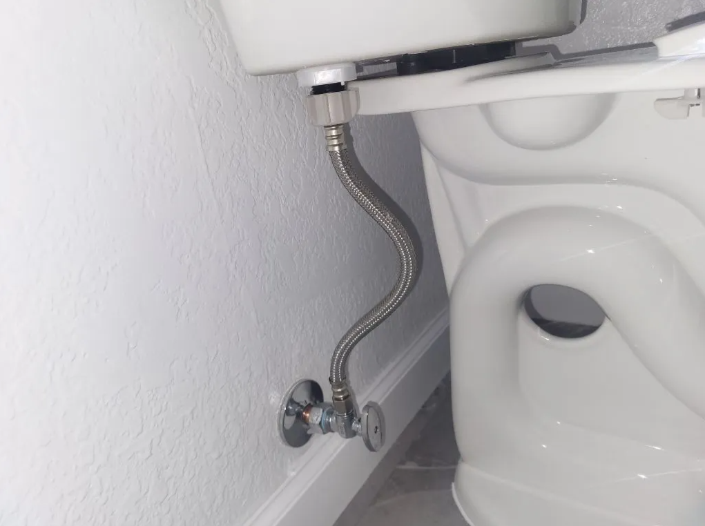
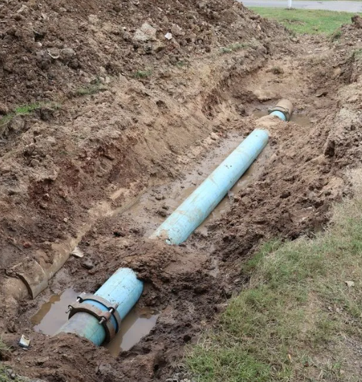

WHERE WE RUN
THE CALL.
Ten mid-Willamette towns under direct coverage. Pick yours — each page has the local job notes, response time, and typical work we run in your neighborhood. Outside this zone? We still come. A small travel fee shows up on the estimate.
10 TOWNS. ONE CREW.
Same flat-rate pricing, same 6-year install warranty, same 30-day no-clog guarantee — whether you're downtown Salem or out past Mt. Angel.

SALEM
Historic + post-war homes. Cast-iron drains, polybutylene supply failures, full-home repipes.

KEIZER
70s–80s development stock. Water heater end-of-life, supply-line replacements, 24/7 emergency coverage.

WOODBURN
Orchards + farms. Well pumps, pressure tanks, residential service alongside rural property work.

SILVERTON
Historic downtown + hillside builds. Fine finish work, careful old-home retrofits, full Wolf Pack service.

STAYTON
Rural properties with wells, septic tie-ins, galvanized supply line retrofits — right in our wheelhouse.

TURNER
Small-town territory. One referral leads to five. We've become the default plumber around here.

MONMOUTH
College-town rentals + constant turnover. Property managers love our response time and PM-friendly billing.

DALLAS
Larger lots, irrigation systems, backflow preventers, outdoor hose-bib clusters — we service the whole spread.

INDEPENDENCE
Historic homes demanding careful, non-invasive leak work. Our acoustic + thermal approach shines here.

MT. ANGEL
100+-year heritage homes, layered retrofits. We fix it once, with respect for the building.